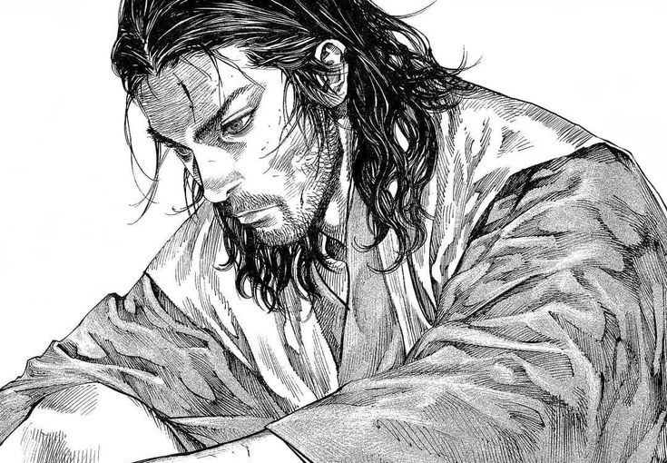
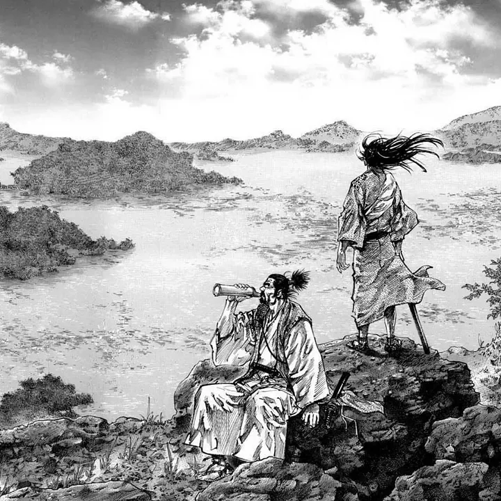
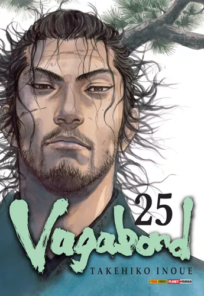

Porque vagabond é tão bom
o que é essa obra

- Vagabond (バガボンド Bagabondo) é uma série de mangá escrita e ilustrada por Takehiko Inoue, baseada no romance Musashi, de Eiji Yoshikawa, que conta a história do samurai Miyamoto Musashi (宮本武蔵 1584–1645). Capa do primeiro volume japonês de Vagabond, mostrando o protagonista Miyamoto Musashi
A arte

- Tanto o trabalho narrativo quanto visual de Inoue nas páginas de Vagabond são dignos de elogios. Páginas duplas incríveis, um traço detalhado e forte, cheio de rabiscos que expressam a violência e a gana do personagem
O mangá retrata à sua própria maneira a vida fictícia de Miyamoto Musashi, um dos maiores samurais do Japão. Sua trama é um misto de jornada intelectual do autoconhecimento, ao mesmo tempo em que treina suas habilidades com a espada em busca do título de "Invencível abaixo do Sol".
mangá luxuoso

- O relançamento de Vagabond pela Panini é completo. Páginas coloridas, formato tradicional japonês, inclusive com orelhas na capa e papel offset. Tudo que o fã poderia exigir em termos de qualidade e a grande chance para começar a ler este clássico
A história começa com o fim da batalha de Sekigahara, e dois personagens que sobreviveram ao confronto, Shinmen Takezo e Honiden Matahachi. Oriundos de um pequeno vilarejo, o desejo de ambos era o de conquistar o mundo e provar que sua espada era capaz de levá-los adiante. Mas as coisas não acontecem como previam e o mundo real se provara muito mais complicado que sua imaginação. Aos poucos os amigos se distanciam e uma nova motivação passa a guiar o coração de Takezo, que precisa mudar de nome e assumir uma nova identidade, Musashi Miyamoto.
Porque berserk é tão bom